2019
TRIPIX
Icebreakers Festival
This design brings the idea of the ocularcentric experience of architecture to light through the faceted reflective interior condition. The viewer experiences the space as a reflection back on themselves, in many different lights and angles while also being intertwined with the reflections of the exterior conditions. It encourages people to interact with it by taking images and looking through the funnel-like apertures to view notable Torontonian landmarks such as the CN Tower, Wave Deck, Lake Ontario, and Rogers Center.
CONTEXT
Icebreakers Festival 2019
LOCATION
HTO Park + Nathan Phillips Square, Toronto
SOFTWARE + TOOLS
Rhinoceros3D, Grasshopper, Illustrator, RhinoCam, CNC Mill, Drill Press, Bandsaw
COLLABORATORS
Gloria Zhou, Vivian Kinuthia, Florencio IV Tameta, Thomas Gomez
ROLES
Design iterations, testing materials, parametric modeling with Grasshopper, fabrication files, fabrication, installation, project coordination and management
Read about it on Designlines .
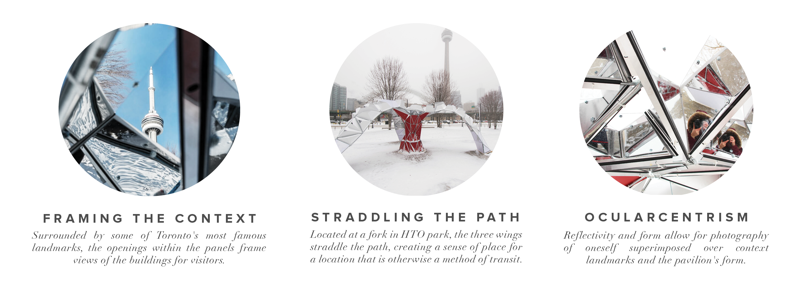
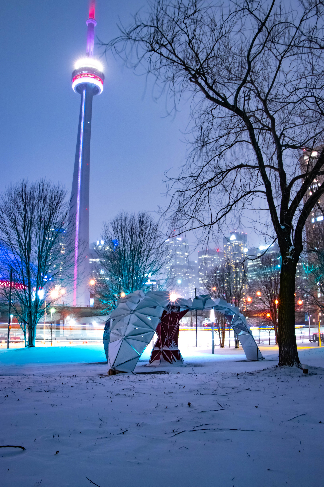
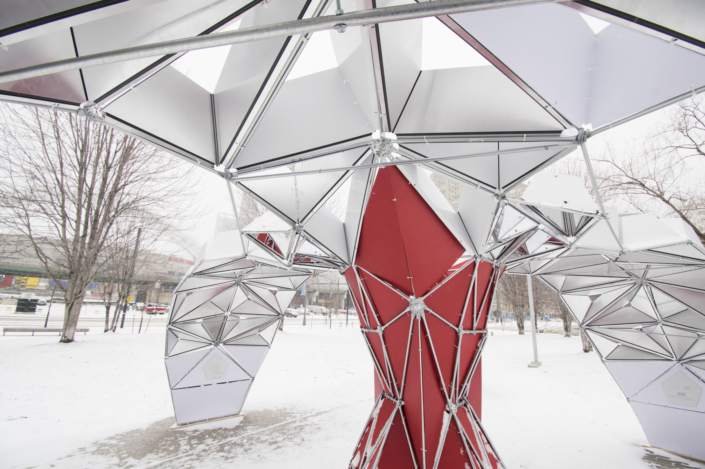
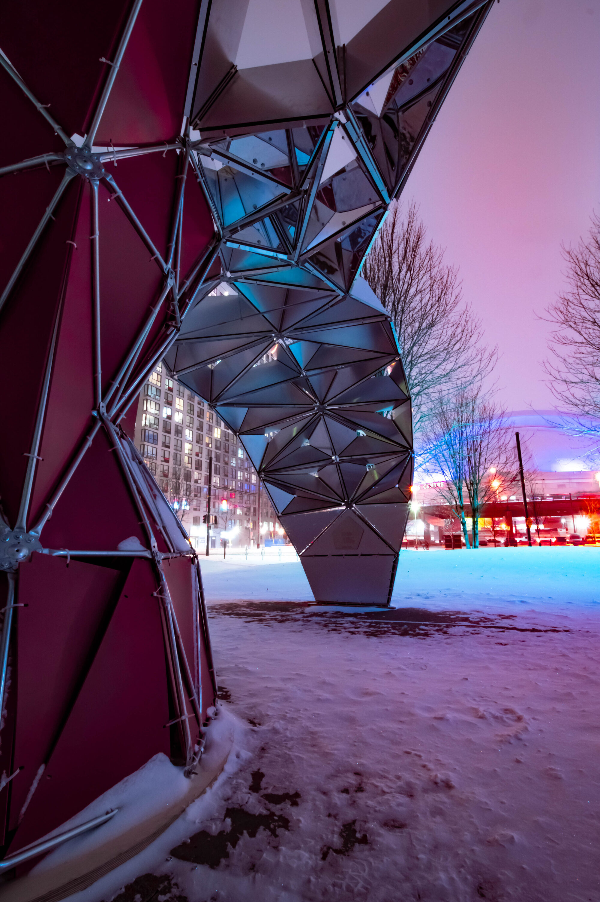
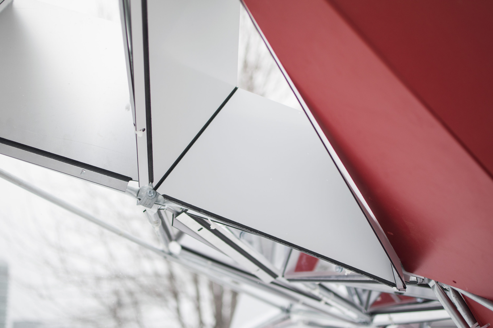
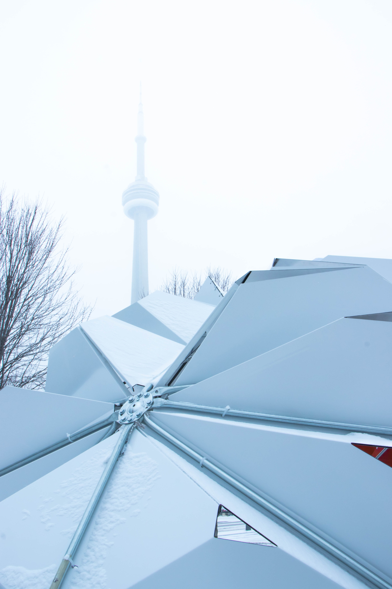
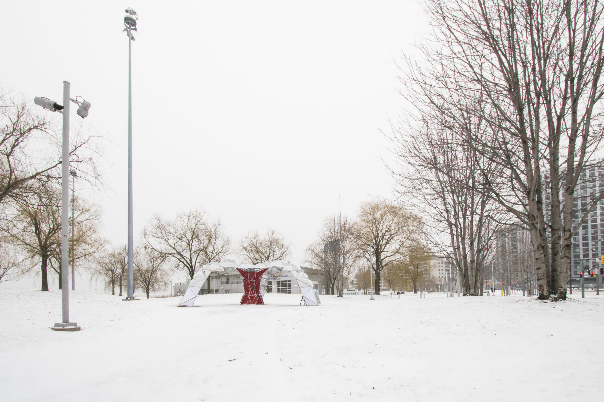
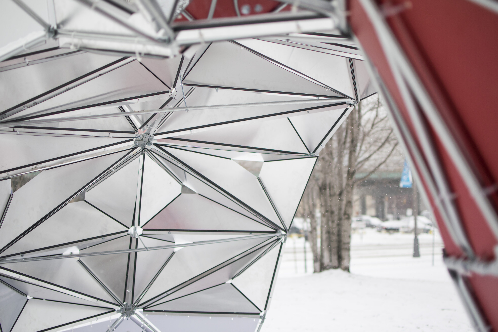
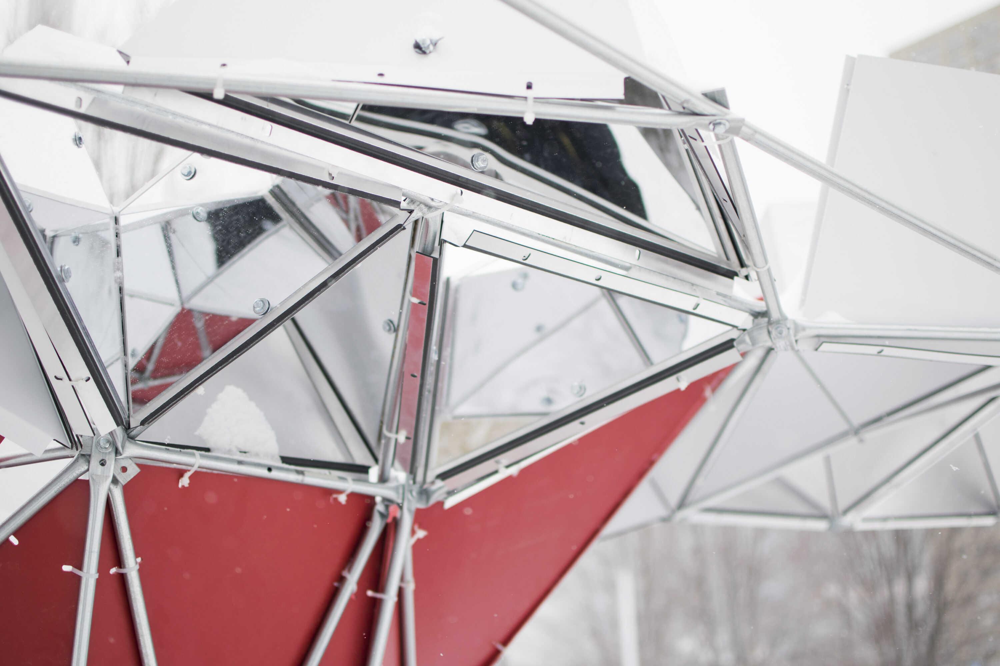
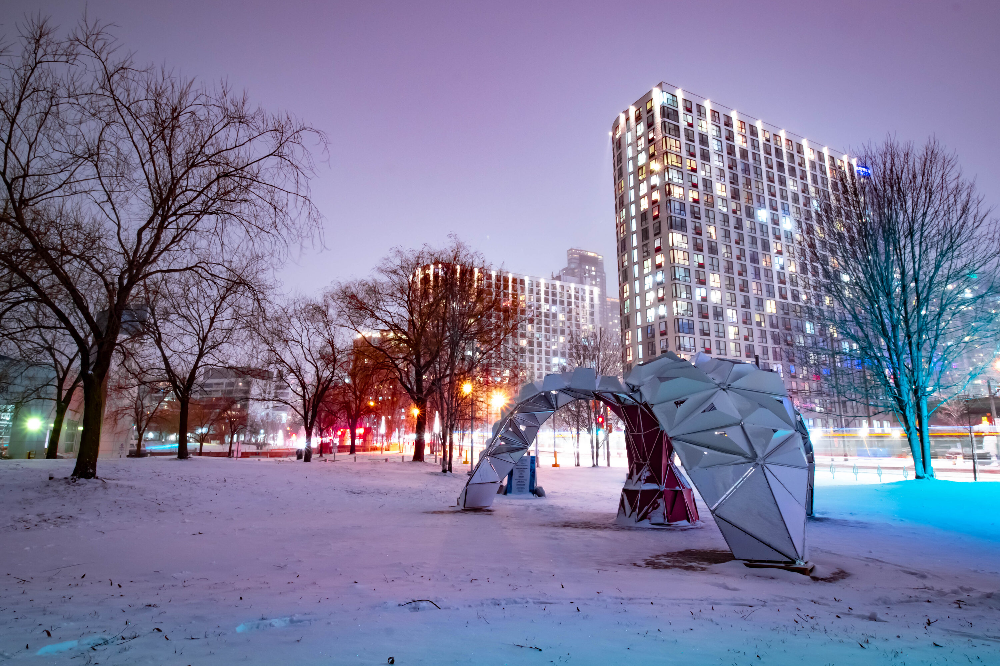
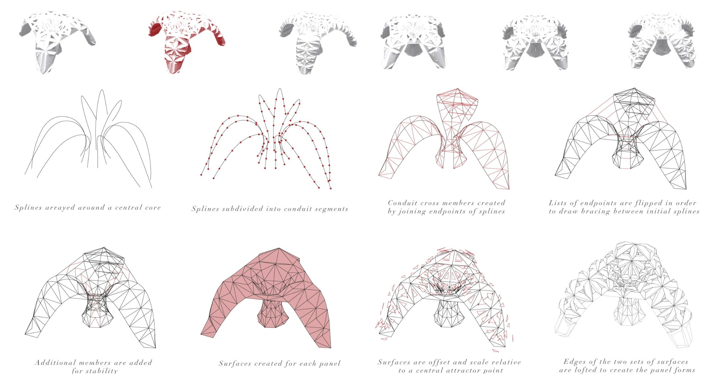
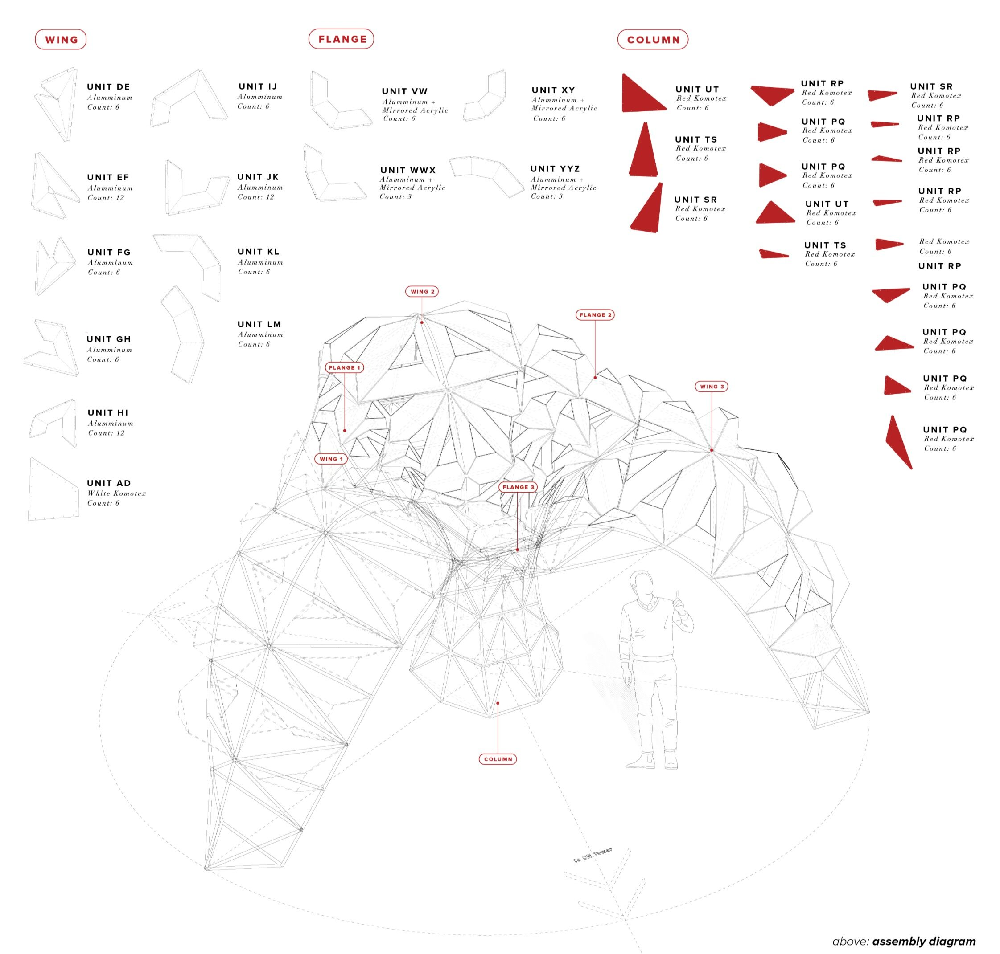
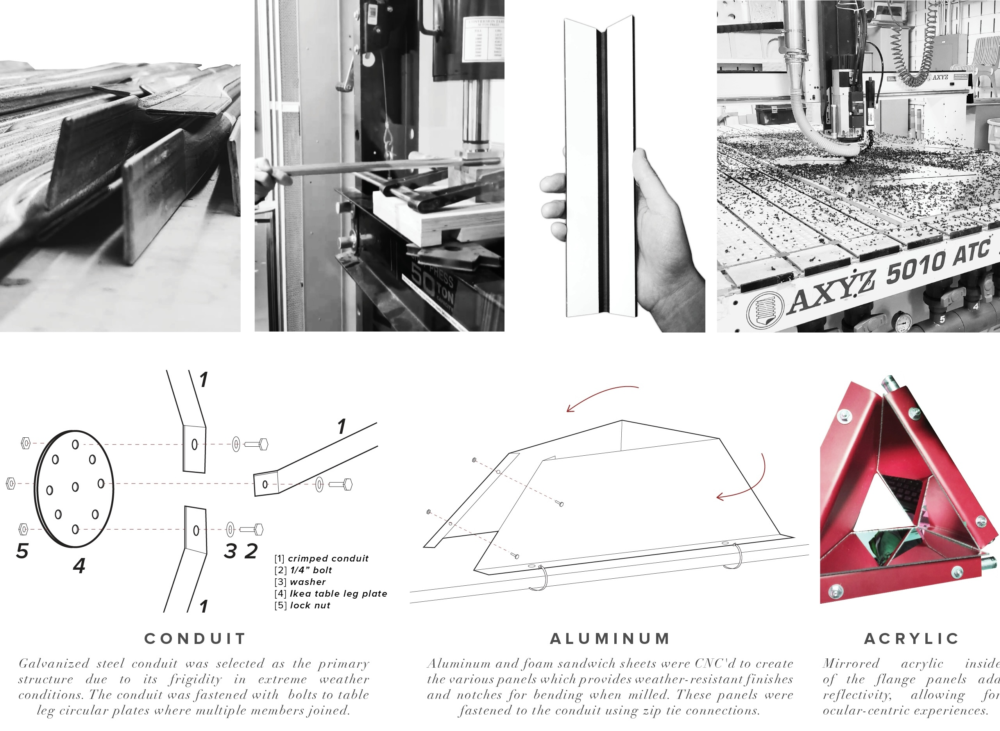
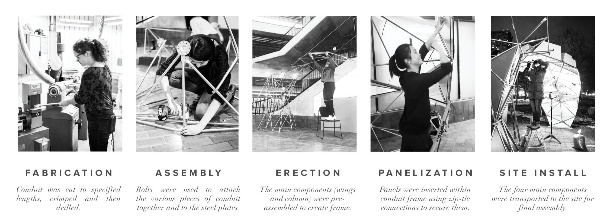
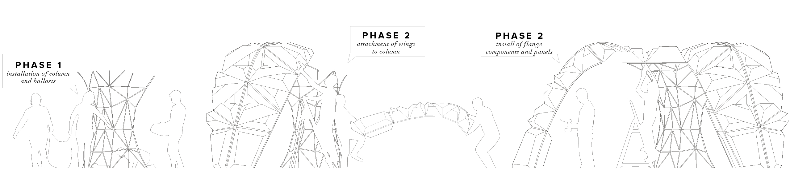

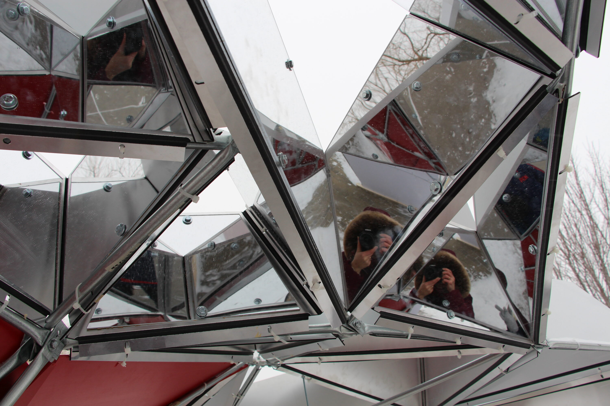